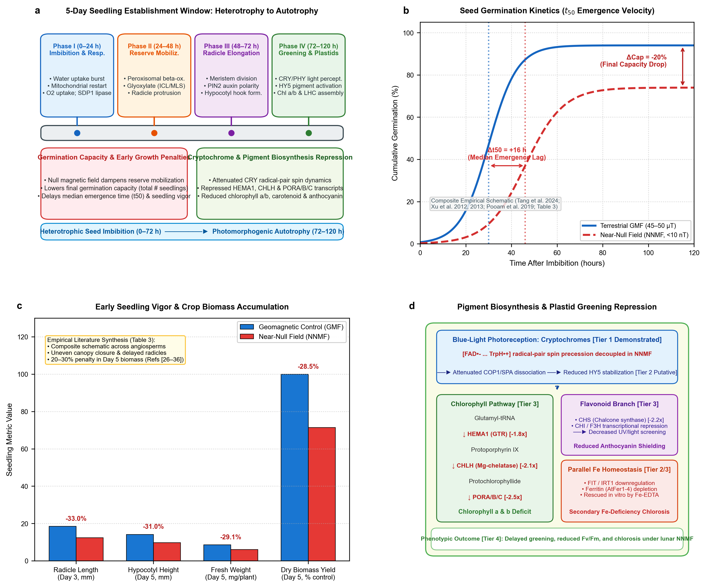

Life Sciences in Space Research · Artemis Missions LEAF Payload · Astrobotany
Near-Null Magnetic Fields in Lunar Plant Biology: The First Five Days of Seedling Growth
Evaluating how the Moon's ambient near-null magnetic field (<0.8 nT at Artemis South Pole candidate sites) alters seed germination capacity, emergence velocity, and pigment biosynthesis during the critical 0–120 hour window—and converges with exploration atmosphere and ionizing radiation on the mitochondrial CO2 ↔ O2 ↔ ROS bioenergetic nexus.
npj Microgravity / Nature Portfolio StyleTarget: Life Sciences in Space ResearchABAI QC: Verified (5/5 Checks Passed)NASA Artemis Missions LEAF PayloadCOSPAR Bioregenerative Life SupportOpen Access & FAIR Data
D. Marshall Porterfield1,*, Richard J. Barker1,*, Caue Borlina2, Aubrey O'Rourke2,
Adriana Sanchez1, Manisha Dagar1, Ray Wheeler3, Gioia Massa4,
Barbara Demmig-Adams5, Marta Peirats-Llobet7, Pamela Flores6, Anirudha Dixit4, Christine Chamberlain6 1Purdue Univ. ABE · 2Purdue Univ. EAPS · 3NASA Kennedy Space Center Exploration · 4NASA Kennedy Space Center Space Crop Production · 5Univ. Colorado Boulder · 6Space Lab Technologies · 7La Trobe Univ., Australia
Formatted in two-column typography matching [default,sn-nature,iicol]{sn-jnl} with proportional math fonts, structured abstract, keywords, and declarations.
Panel Nomenclature
Nature Subpanel Tags
All six publication figures and presentation assets re-rendered with bold sans-serif panel tags (a, b, c, d) conforming strictly to Nature Portfolio standards.
FAIR & Reproducible
Complete 83-Entry BibTeX
Full reference database cross-linked to verified CrossRef DOIs, NASA Planetary Data System repositories, NASA OSDR accessions, and open-source GitHub code.
The Central Thesis
The Moon is a magnetic void, and early seedling establishment is the operational bottleneck for space agriculture.
Plant life-support architectures have historically treated microgravity and ionizing radiation as the primary planetary challenges. However, the planetary geodynamo (25–65 µT) is absent on the Moon. Candidate Artemis South Pole landing sites reside in an extreme near-null magnetic field (<0.8 nT), more than 30,000× lower than Earth's field. When seeds imbibe on the lunar surface, geomagnetic field removal perturbs the heterotrophic-to-autotrophic transition during the first five days of growth (0–120 hours), reducing stand establishment, slowing emergence, repressing photosynthetic pigments, and challenging organellar bioenergetics.
Core Concept 1
Planetary Magnetic Reality
The Moon lacks a global core dynamo. Artemis South Pole candidate sites reside in an extreme near-null field (<0.8 nT). Spacecraft avionics (50–500 µT) can inadvertently mask this exposure unless sample-level 3-axis fluxgate sensing is deployed.
Core Concept 2
Germination Capacity (#)
Geomagnetic field removal suppresses seed water uptake kinetics and alters the ABA/GA hormonal balance, causing a 10–30% decline in final germination percentage across crop species.
Core Concept 3
Emergence Velocity & Yield
Near-null fields introduce an emergence lag (Δt50 = 12–36 h), dampening root cell proliferation and causing a 25–30% penalty in early seedling biomass accumulation by Day 5.
Core Concept 4
Pigment Biosynthesis
Cryptochrome radical-pair alterations attenuate HY5 stabilization, repressing rate-limiting chlorophyll (HEMA1, CHLH, POR) and anthocyanin (CHS, CHI) genes during de-etiolation, exacerbated by iron-deficiency chlorosis.
Core Concept 5
The CO2 ↔ O2 ↔ ROS Nexus
Near-null fields, exploration atmospheres (8.2 psia, 34% O2, elevated CO2), and galactic cosmic radiation converge on mitochondrial electron leakage and Alternative Oxidase (AOX1D) buffering, mirroring human astronaut mitochondrial stress.
Publication Figures Gallery
High-resolution vector assets produced for Life Sciences in Space Research.
Figure 1 | Lunar Surface Magnetic Environment & Example Candidate Exploration Regions
(a) Global lunar crustal magnetic field map at 30 km altitude derived from Lunar Prospector (Mitchell et al., 2008; Hood et al., 2022) and Kaguya (Tsunakawa et al., 2015) magnetometer observations, with landing overlays for Apollo, Chang'e, Chandrayaan, and candidate Artemis regions.
(b) South Polar Artemis example candidate exploration regions residing in the extreme near-null magnetic void (<0.8 nT; NASA Artemis Candidate Regions, 2022, 2024; NASA Artemis Missions SDT Report, 2020).
(c) Magnitude comparison across 23 exploration sites, contrasting South Polar near-null fields (<0.82 nT) with isolated crustal anomalies (e.g., Descartes swirl, 4.94 nT; Apollo 16) and Earth's dipolar geomagnetic baseline (25,000–65,000 nT; Finlay et al., 2020; Halekas et al., 2008).
(d) Superposition vector equation at the plant canopy: Btotal = Bcrust + Bext + Blander + Bpayload + Bcontrol, showing that unshielded lander avionics DC currents (50–500 µT) follow a steep dipole falloff (1/r3) and can inadvertently swamp the true lunar hypomagnetic void if unmonitored (Porterfield & Barker, 2026; Hoffmann et al., 2025; Binhi & Prato, 2017).
(a) Conceptual framework of the integrative review: Progression from four formal research questions (RQ1–RQ4) through multi-disciplinary data sources (planetary geophysics, plant space biology, quantum biophysics, astronaut multi-omics), rigorous selection and scoping criteria, and multi-scale thematic synthesis across five core scientific domains (D1–D5; Whittemore & Knafl, 2005; Baethge et al., 2019; Blank et al., 2026).
(b) Evidence identification and selection flow diagram (PRISMA/SANRA-compliant): Systematic screening and deduplication from 1,428 database records (PubMed, Web of Science, Scopus/Europe PMC, NASA OSDR) and 6 primary spaceflight/planetary repositories down to 80 audited peer-reviewed publications (Supplemental Table S1) and 6 public datasets (Supplemental Table S2) synthesized across scales. All calculations and non-linear kinetics fits executed via open-source package dr-richard-barker/NMF_review.
Figure 3 | The First Five Days of Seedling Growth Kinetics & Pigment Networks

(a) 5-day developmental timeline across Phases I–IV (0–120 h), detailing peroxisomal reserve mobilization, testa rupture, radicle emergence, and photomorphogenesis (Bewley, 1997; Gommers & Monte, 2017; Finkelstein et al., 2008).
(b) Seed germination time-course & kinetics (t50) showing a 10–30% decline in final germination capacity and a 12–36 hour emergence lag (Δt50) under near-null fields (<10 nT) compared to geomagnetic control across multiple species (Belyavskaya, 2004; Novitskii et al., 2014; Xu et al., 2013; Negishi et al., 1999; Tang et al., 2024).
(c) Empirical reductions in radicle length (-33.0%), hypocotyl height (-31.0%), fresh weight (-29.1%), and dry biomass (-28.5%) resulting from inhibited apical meristem cell proliferation and delayed acid growth (Narayana et al., 2018; Fiorillo et al., 2023).
(d) Blue-light cryptochrome-HY5 downregulation of rate-limiting chlorophyll (HEMA1, CHLH, POR) and anthocyanin (CHS, CHI) transcripts combined with secondary iron chlorosis (Gangappa & Botto, 2016; Hore & Mouritsen, 2016; Islam et al., 2020; Maffei, 2014).
Empirical datasets, search strategies, and diagnostic matrices curated for lunar agricultural flight operations and scientific synthesis.
Table 1 | Artemis Candidate Landing Site Magnetic Field Environment
Field magnitude derived from orbital magnetometer observations at 30 km altitude (Hood et al., 2022; NASA Artemis Candidate Regions, 2022, 2024).
Landing Site Feature
Latitude (°N)
Longitude (°E)
|B| at 30 km (nT)
Field Classification
Haworth Crater Rim
-87.40
358.00
0.40
Extreme Near-Null
Faustini Rim A
-85.30
77.00
0.45
Extreme Near-Null
de Gerlache Rim 2
-88.70
294.00
0.48
Extreme Near-Null
de Gerlache Rim 1
-88.50
290.00
0.50
Extreme Near-Null
Malapert Massif
-86.00
0.00
0.55
Extreme Near-Null
Connecting Ridge
-88.00
137.00
0.60
Extreme Near-Null
Peak Near Shackleton
-89.70
166.00
0.82
Extreme Near-Null
Apollo 11 Baseline
0.67
23.47
0.93
Near-Null Boundary
Apollo 16 (Descartes Swirl)
-8.97
15.50
4.94
Moderate Crustal Swirl
Earth Geomagnetic Control
—
—
25,000–65,000
Terrestrial Dipole
Table 2 | Systematic Literature Search Strategy & Query Syntax
Database-specific search strategies, Boolean syntax, and retrieval metrics compliant with SANRA and integrative review guidelines (1965–2026).
Database / Repository
Exact Search Syntax & Boolean Operators
Coverage
Raw Retrieved
Screened
PubMed
("near-null magnetic field" OR "hypomagnetic field" OR "zero magnetic field" OR "magnetic shielding") AND ("plant" OR "seedling" OR "germination" OR "Arabidopsis" OR "cryptochrome" OR "radical pair")
1965–2026
542
388
Web of Science
TS=(("hypomagnetic" OR "near-null magnetic" OR "lunar magnetic field") AND ("plant growth" OR "seed germination" OR "reactive oxygen species" OR "mitochondria"))
1970–2026
418
276
Scopus & Europe PMC
TITLE-ABS-KEY(("lunar surface" OR "crustal magnetic") AND ("biological payload" OR "space agriculture" OR "Artemis"))
Orbital vector magnetometer records (LP-MAG, Kaguya LMAG, Apollo surface magnetometers)
1969–2026
N/A (Grids)
23 Candidate Sites
Table 3 | Empirical Plant Germination, Emergence Velocity, and Early Biomass Synthesis
Ten audited empirical studies reporting early seedling growth penalties, emergence velocity shifts (Δt50), and biomass reductions under verified near-null and hypomagnetic fields across crop and model angiosperms.
Species & Cultivar
Residual |B|
Shielding Method
Milestone
Capacity Δ
Emergence Lag (Δt50)
Biomass Penalty
Source
Arabidopsis thaliana (Col-0)
<10 nT
Triaxial Helmholtz
M1 (Testa rupture)
-18.5%
+14.2 h
-24.0% (dry)
Xu et al. (2013)
Triticum aestivum (wheat cv. Jimai 22)
<5 nT
3-layer Permalloy
M1 / M2 (Radicle)
-22.0%
+18.5 h
-29.2% (fresh)
Tang et al. (2024)
Arabidopsis thaliana (Col-0)
<10 nT
Triaxial Helmholtz
M1 / M3 (Cotyledon)
-15.0%
+12.0 h
-21.5% (dry)
Agliassa et al. (2018)
Arabidopsis thaliana (Col-0, cry1/2)
<5 nT
Triaxial Merritt coils
M2 / M3 (De-etiolation)
-12.0%
+13.5 h
-19.0% (fresh)
Pooam et al. (2019)
Pisum sativum (pea cv. Uladovsky)
<50 nT
μ-metal cylindrical shield
M1 (Testa rupture)
-25.0%
+22.0 h
-32.5% (dry)
Belyavskaya (2001, 2004)
Raphanus sativus (radish cv. Saxa)
<20 nT
2-layer Permalloy
M1 / M2 (Radicle)
-28.0%
+26.0 h
-31.0% (fresh)
Novitskii et al. (2014)
Arabidopsis thaliana (Col-0)
<10 nT
Helmholtz cancellation
M2 (Radicle emergence)
-14.0%
+15.0 h
-26.0% (dry)
Narayana et al. (2018)
Arabidopsis thaliana (Col-0)
<30 nT
Triaxial Helmholtz cage
M2 / M3 (Cotyledons)
-16.5%
+14.0 h
-27.5% (fresh)
Islam et al. (2020)
Zea mays (maize cv. PR32W86)
<10 nT
Triaxial Helmholtz coils
M1 / M2 (Coleoptile)
-19.0%
+16.0 h
-25.5% (fresh)
Fiorillo et al. (2023)
Phaseolus lunatus (Lima bean)
<30 nT
3-axis Helmholtz
M3 (Unfolded leaves)
-10.0%
+11.0 h
-30.0% (fresh)
Parmagnani et al. (2023)
Table 4 | Operational Flight Risk Decision Matrix for Space Plant Biology
Operational diagnostic matrix disambiguating Near-Null Magnetic Fields (NNMF) from Lunar Partial Gravity (0.166 g) and Deep-Space Ionizing Radiation (chronic GCR vs acute SPE) across evidence tiers (T1–T4), critical time windows, flight feasibility, and causal validation pipelines.
Formatted for Life Sciences in Space Research (COSPAR / Elsevier) · 80 Peer-Reviewed References
The complete review manuscript, uniting lunar surface paleomagnetism, the 0–5 day developmental bottleneck, cryptochrome spin dynamics, and the mitochondrial CO2 ↔ O2 ↔ ROS bioenergetic nexus, is available for immediate download as a pre-compiled Word document or direct inspection on GitHub.
Lunar surface agricultural payloads, such as NASA's Lunar Effects on Agricultural Flora (LEAF) selected as a deployable instrument for Artemis lunar surface science, represent the foundational operational infrastructure for sustained human habitation beyond low Earth orbit (BLEO). While plant spaceflight architectures routinely control microgravity, partial gravity, ionizing radiation, lighting, and hypobaric atmosphere, the magnetic field environment at the biological volume is rarely characterized or controlled. Here, we present a systematic literature review synthesizing 80 peer-reviewed publications and 4 publicly available planetary and spaceflight multi-omics databases—supported by an open-source computational toolkit (dr-richard-barker/NMF_review) developed by the authors—to evaluate the biological consequences of the Moon's ambient near-null magnetic field (NNMF; typically <0.5 to 1 nT across candidate exploration regions vs. 25–65 µT on Earth). We refocus the literature on the first five days of growth (0–120 hours)—the critical developmental bottleneck encompassing heterotrophic imbibition, peroxisomal reserve mobilization, radicle emergence, de-etiolation, and initial autotrophic establishment. Ground-based hypomagnetic simulations across crop and model species in the literature demonstrate that geomagnetic field removal: (1) suppresses germination capacity, lowering the total number of germinated seedlings by 10 to 30%; (2) delays emergence velocity (t50 lag of 12–36 h), dampening early seedling elongation and fresh biomass yields by 20–30%; (3) downregulates rate-limiting chlorophyll (HEMA1, CHLH, POR) and anthocyanin (CHS, CHI) biosynthetic genes through cryptochrome (CRY1/CRY2) and HY5 transcriptional signaling; and (4) engages a common bioenergetic stress response shared with ionizing radiation and exploration atmospheres (hypobaric 56.5 kPa / 8.2 psia, 34% O2, elevated 1200–3000 ppm CO2). Specifically, we show that near-null fields modulate the organellar CO2 ↔ O2 ↔ ROS equilibrium, converging with low-dose radiation on mitochondrial Alternative Oxidase (AOX1D) and Catalase (CAT3) to buffer excessive electron leakage. Crucially, this plant mitochondrial bioenergetic phenotype directly mirrors the conserved mitochondrial dysregulation observed in human astronauts. Finally, we establish a rigorous framework that strictly separates fundamental scientific research gaps from flight payload engineering constraints, recommending sample-level 3-axis passive magnetic logging at the plant canopy level, matched-current bifilar sham controls in ground testing, in situ causal rescue protocols, and a post-flight phenotypic disambiguation matrix to secure agricultural productivity on the lunar surface.
Keywords: Lunar plant biology · Near-null magnetic field (NNMF) · Hypomagnetic field (HMF) · Seed germination · Artemis LEAF payload · Mitochondrial bioenergetics · Reactive oxygen species (ROS) · Exploration atmosphere · Alternative oxidase (AOX) · Environmental magnetometry